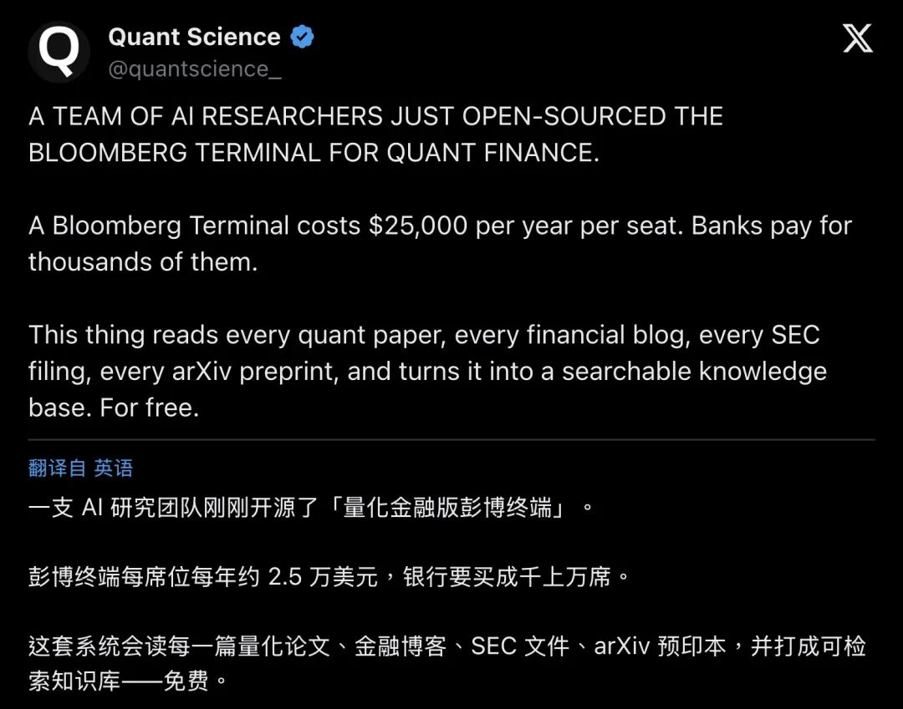
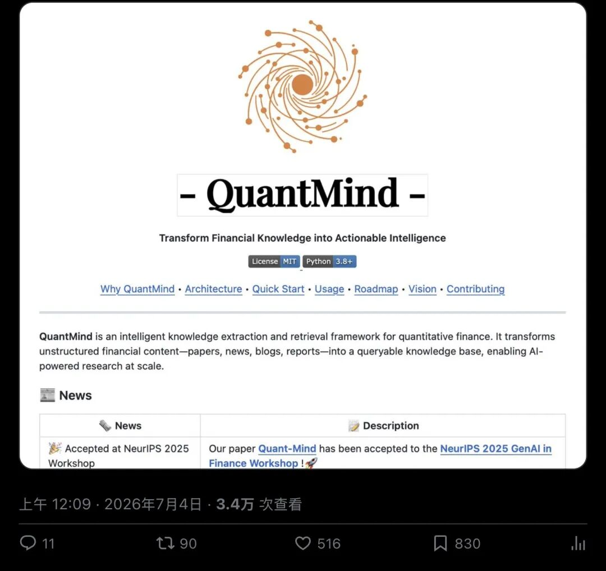
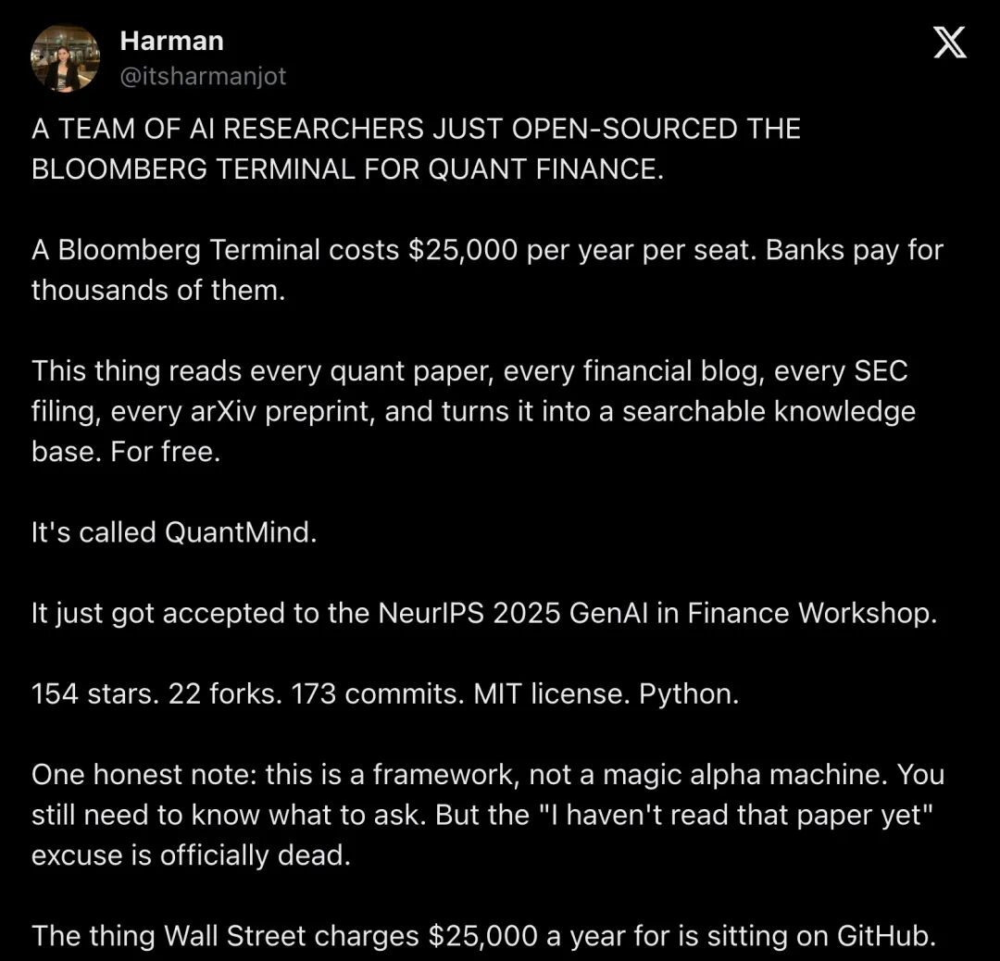
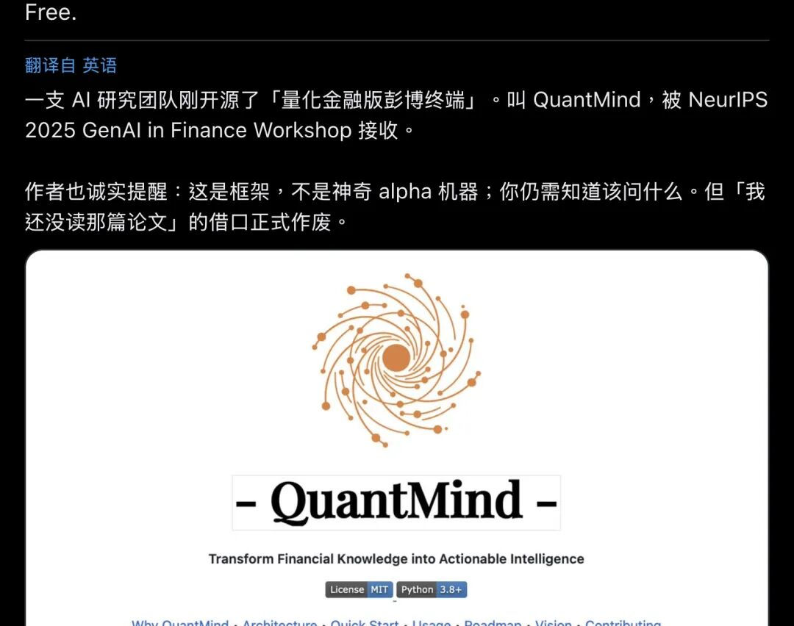
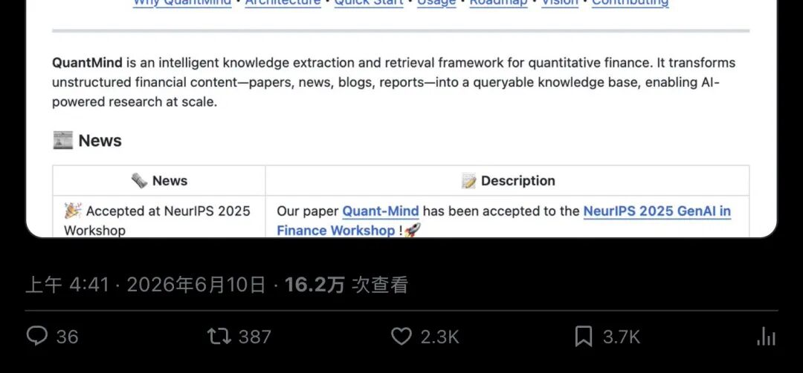
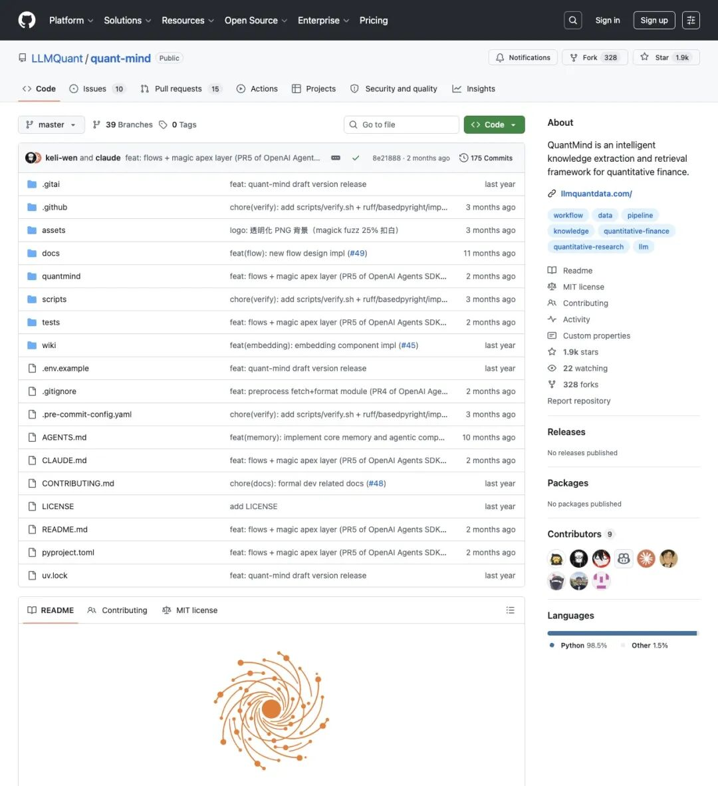
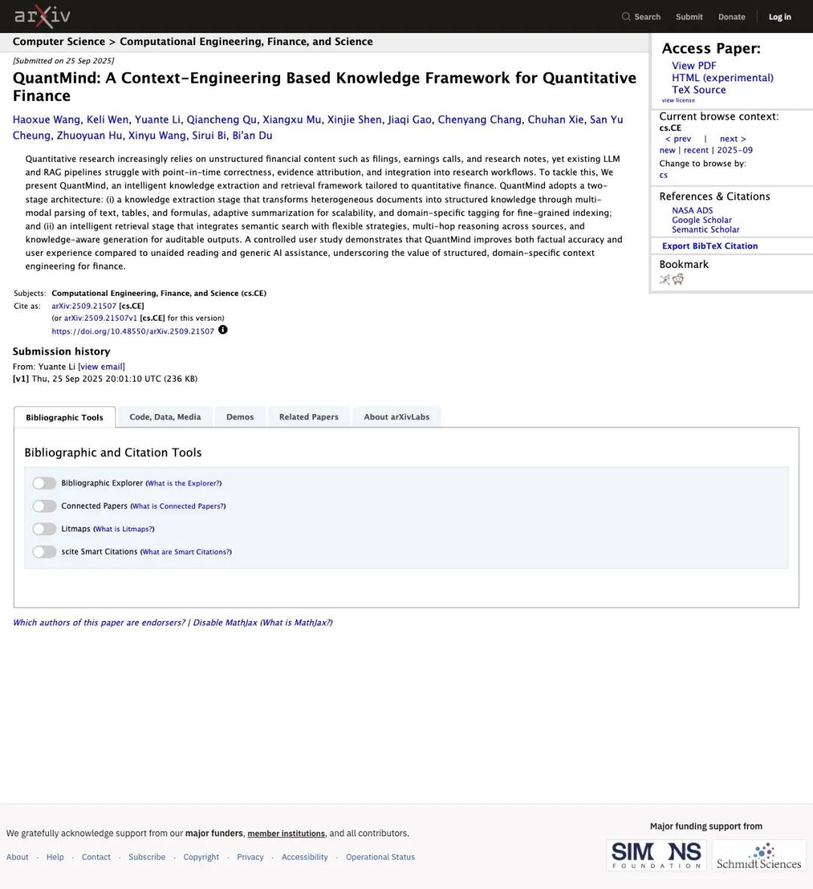
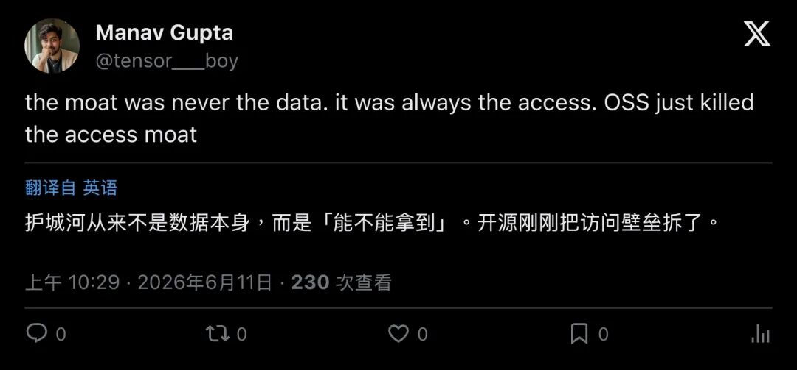
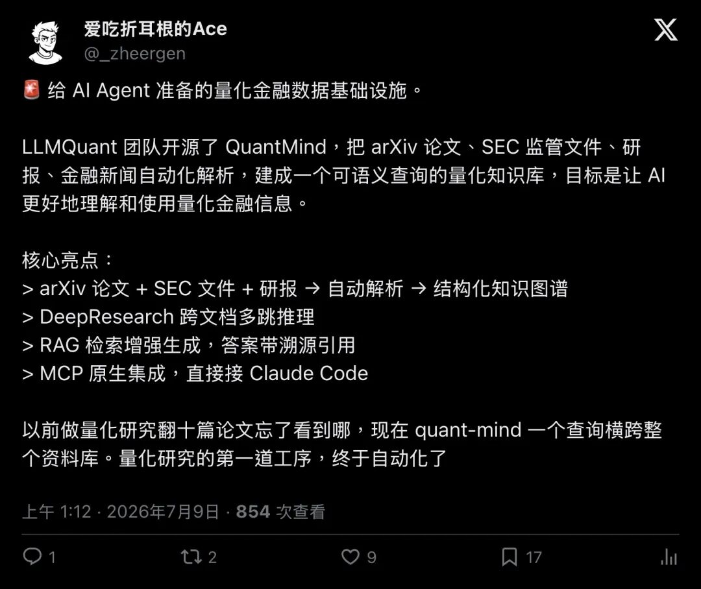

手机屏幕暗了又亮，你被一条推特钉在了原地。
「一支AI研究团队，刚刚开源了量化金融版的彭博终端。」
发这条推文的人叫 Quant Science（@quantscience_），一个量化教育向的蓝V账号。她摊开数字就说：彭博终端每个席位一年要2.5万美元，银行一次买成千上万个；而这套新东西，能读遍每一篇量化论文、每一篇金融博客、每一份SEC监管文件、每一个arXiv预印本，打成一个可检索的知识库，免费。
"A Bloomberg Terminal costs $25,000 per year per seat. Banks pay for thousands of them. This thing reads every quant paper, every financial blog, every SEC filing, every arXiv preprint, and turns it into a searchable knowledge base. For free."
「彭博终端每席位每年约2.5万美元，银行要买成千上万席。这套系统会读每一篇量化论文、金融博客、SEC文件、arXiv预印本，并打成可检索知识库，免费。」
配图是一张橙色螺旋logo的项目海报，白底黑字写着一个名字：QuantMind。
 
▲ @quantscience_ 于2026年7月4日发布，采集时约3.4万浏览、516赞、830书签
这条话术，早就火过一轮了
先别急着去GitHub搜仓库名。这条推文用的措辞，你大概率在别处见过。
一个多月前，2026年6月10日,一个叫Harman（@itsharmanjot）的账号发过几乎一字不差的开场白，互动量比7月这条高出一大截：约16.2万浏览、2319赞、3709书签。他在末尾多补了一句诚实话：
"One honest note: this is a framework, not a magic alpha machine. You still need to know what to ask. But the 'I haven't read that paper yet' excuse is officially dead."
「诚实提醒一句：这只是个框架，撑不起『神奇alpha机器』这种名号。你依然得知道该问什么。但『我还没读那篇论文』这个借口，正式作废了。」
这句免责声明比标题诚实得多，可惜绝大多数转发只截了前半句，华尔街收2.5万美元的东西，躺在GitHub上，免费。
  
▲ @itsharmanjot 于2026年6月10日发布，约16.2万浏览、2319赞、3709书签
同一段英文话术，从6月打到7月，被不同账号反复搬运。这是社交媒体上一种很典型的打法：一套模板句式，配一张项目截图，换个账号署名接力发。热闹归热闹，但它没告诉你项目本身长什么样。
点开GitHub，画风突变
真去仓库里看一眼，故事就变了味道。
LLMQuant/quant-mind 是个MIT协议的开源项目，Python占比98.5%。截至写这篇文章时，star数已经涨到了1.9k，fork 328，175次提交，9名贡献者。
"QuantMind is an intelligent knowledge extraction and retrieval framework for quantitative finance."
仓库的「About」一栏就这么一行字：「QuantMind是一个面向量化金融的智能知识抽取与检索框架。」
注意，这里没有出现「行情」「下单」「实时」这些词。它不打开K线图，不接交易所，不做订单路由。

▲ LLMQuant/quant-mind 仓库主页，star数已远超病毒帖引用的旧数字
有意思的是，Harman那条16万浏览的推文里，star数字停留在154，fork停留在22。真实仓库早就涨到1.9k了。换句话说，那套到处转发的开场白，用的是一个多月前的快照，没人回头更新过。搬运的速度，跑赢了核实的速度。
它到底在解决什么问题
想象你是个量化研究员，桌上永远堆着三样东西：arXiv上新贴出来的因子论文、公司财报里密密麻麻的表格脚注、券商甩过来的PDF研报。
老办法是人工翻、手动高亮、写笔记，三个月后想找某张表在哪张论文里，只能从头再翻一遍。丢给通用聊天机器人也不牢靠，它敢编，说不清出处，合规场景根本不敢用它的答案。
QuantMind的解法是把这件事拆成两段，论文里管这叫「extract once, retrieve forever」（抽取一次，检索无限次）：
第一阶段，知识抽取，把论文、新闻、博客、报告这类杂乱文档，解析成文字、表格、公式，打上研究领域标签，沉淀成结构化知识单元。这一步用大模型解析PDF，成本不低，所以尽量只做一次。
第二阶段，智能检索，拿着做好的知识库反复用：语义检索找片段，遇到复杂问题就多跳推理，跨论文串联概念、比对方法、交叉验证结果，最后生成带引用的答案。
这套框架背后能拿出真正的学术分量。2025年9月25日，同名论文提交到了arXiv，编号2509.21507，作者横跨剑桥大学、卡内基梅隆大学、新加坡国立大学、北京大学、上海交通大学等多所机构。论文随后被NeurIPS 2025生成式AI金融专题研讨会（GenAI in Finance Workshop）接收为海报论文。

▲ arXiv:2509.21507，提交于2025年9月25日，作者来自剑桥、CMU、新加坡国立大学、北大等机构
论文给自己打了几分
比起GitHub star，更值得细看的是论文里那组用户实验数字。
研究设计是受控实验：同一批受试者分别在「无AI辅助」「通用AI（GPT-4o）」「QuantMind」三种条件下，阅读六篇量化与金融经典论文，涵盖A股异象、波动率分解、隔夜收益等主题，然后打分。
结果大致是：无AI辅助均分3.11，通用AI均分3.82，QuantMind均分4.25。相比无AI，提升1.14分，统计显著性p<0.001；相比通用AI，提升0.43分，p=0.001。
论文自己也没藏着掖着写局限：时间或领域漂移下可能出现检索偏差；用户实验样本规模有限；权益类以外的资产（信用、利率、衍生品）覆盖和结构化程度还不够。
一个愿意公开对照实验数字、同时承认短板的开源项目，比只有star数没有实验设计的项目，更值得多信一分。
评论区没打算给面子
热闹的转发之下，评论区早就开吵了。
一个叫Simeon Vanov（@simo_vanov）的用户给出了相对中肯的判断：
"Genuinely useful for the reading-speed problem... Anything sitting in a published paper has already been read by every desk with a Bloomberg seat, so by the time an edge is written down it's usually crowded or gone. Faster access to public knowledge and finding something others haven't are two different problems."
「对阅读速度问题确实有用……但已经发表的论文，有彭博席位的交易台基本都读过了，等到某个优势被写进论文，通常已经被挤占或者消失了。更快拿到公开知识，和找到别人没发现的东西，是两回事。」
Marco（@Marco_mmabjj）说得更不客气：
"People don't have a clue what a Bloomberg terminal is an how live data licensing works if they thing this is a 'Bloomberg terminal'."
「要是有人真觉得这就是『彭博终端』，那说明他们对彭博终端到底是什么、实时数据授权怎么运作，压根没概念。」
Harshveer Singh（@stringharsh）的回复很干脆：这跟彭博终端压根不沾边。
但真正让人停下来想一想的，是Manav Gupta（@tensor___boy）那句短评：
"the moat was never the data. it was always the access. OSS just killed the access moat."
「护城河从来跟数据本身没什么关系，一直是『能不能拿到』这件事。开源刚刚把这道访问壁垒拆掉了。」

▲ @tensor___boy 的回复，230次浏览
这句话拆穿了整场热闹的底层逻辑：arXiv论文本来就免费公开，SEC文件本来就是公开档案。真正稀缺的，是有没有人愿意花时间把它们持续抽取、结构化、串联起来，还留下证据链。QuantMind如果真有价值，价值来自把这道苦力工业化，跟凭空长出一份彭博级别的私有数据没有关系。
彭博到底在卖什么
把话说回彭博终端本身，才能看清这场对比到底成不成立。
彭博终端卖的是一整套基础设施级的工作台：多资产的实时与历史行情、新闻与研究分发、分析函数与图表工具，还有历史上因IB即时通讯闻名的社交层，加上部分执行与工作流集成。
真正贵、真正难被开源复制的，是数据授权与合规分发，交易所和数据供应商的再分发权极其昂贵，合同条款复杂，终端费用里有相当一部分其实付给了上游数据方，软件界面本身只占小头。公开报道里，单席位价格常年在2.5万到3.2万美元区间浮动，具体数字随谈判和渠道变化，彭博自己并不公布统一价目表。
QuantMind压根没有碰这块，它不接实时行情，不做订单路由，不涉及数据再分发授权。它做的事情，是把公开可得的论文、博客、报告，变成一套研究人员能反复查询的知识库。
把这两样东西摆在一张桌子上比，本身就是拿错了标尺。
中文圈换了个说法：给AI Agent用的基础设施
英文话术打「省钱」这张牌，中文圈的二次解读却悄悄换了角度。
2026年7月9日，一位叫「爱吃折耳根的Ace」（@_zheergen）的账号把QuantMind重新定义成「给AI Agent准备的量化金融数据基础设施」：自动解析arXiv论文、SEC文件、研报，建成结构化知识图谱；支持DeepResearch跨文档多跳推理；RAG检索增强生成，答案带溯源引用；原生支持MCP协议，能接入Claude Code这样的Agent工具。

▲ @_zheergen 于2026年7月9日发布，854次浏览
这个角度其实更贴近LLMQuant这个组织自己的定位。它的GitHub主页写着「The AI community building future technology for investment research」，quant-mind只是它产品矩阵里的一环，旁边还挂着双语量化百科quant-wiki、论文发现工具Quant Paper，以及为LLM打通行情与研究数据的LLMQuant Data。知识库真正对接的，是下一个Agent能调用的接口。
一张桌子上的开源终端「动物园」
跟彭博类比的开源项目，QuantMind只是其中一个。
评论区里，Colin Kim（@colinkimdev）顺手甩出另一个链接：FinceptTerminal，同样自称金融终端的开源替代品。往前倒几年，Gamestonk Terminal演变成的OpenBB，也曾多次被写成「开源彭博」。
▲ OpenBB定位为可连接多数据源的分析工作台，跟QuantMind的知识框架分属不同物种
这些项目看着都在蹭同一个标签，实际上分属不同的物种：
| 主战场 | |||
FinceptTerminal偏UI复刻，OpenBB偏数据连接工作台，QuantMind偏论文型知识框架，三个赛道，只是共享了同一个营销靶子。
彭博，正在变成一个形容词
过去十年，几乎每一款界面稍微像样点的金融数据工具，都被媒体喊过一次「彭博杀手」。这次轮到QuantMind，只是这个循环的最新一集。
「彭博」这个词，在开源圈的话术里，早就从一个产品名，退化成了「贵且全能」的代名词。用它引流没问题，但正文里终归要把定义还给本体：QuantMind更接近一个能读文献、留证据、可以挂到Agent上的智能图书管理员，报价下单这种事，它插不上手。
真正值得记住的，反而是三条更冷静的判断。
第一，开源真正拆掉的是访问权，arXiv、SEC文件本来就公开，数据本身从来不稀缺，难的一直是持续加工和证据留痕这道苦力活。
第二，抽取和检索被刻意分成两段，很像财务上「先入账、再出报表」的思路：牺牲一点端到端的炫技，换取论文反复强调的point-in-time正确性和证据可追溯，这恰恰是机构合规最在意的两个词。
第三，快，不等于准。Simeon Vanov那句提醒值得刻在案头：更快读完所有人都能读到的东西，跟找到别人没发现的东西，是完全不同的两件事。QuantMind改变的是研究这道工序的输入端效率，市场竞争到最后仍然拥挤，alpha该稀释还是会稀释。
软件协议免费，推理和存储的账单照样要付。真正被撬动的，是那道曾经只属于机构桌面、拦住普通研究者的准入门槛，它被搬掉了。